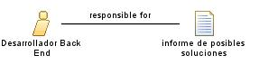

| Role: Desarrollador Back End |
 |
|
Relationships
 |
||
| Additionally Performs | ||
|---|---|---|
Main Description
| Este rol tiene la responsabilidad de implementar los modelos del software a nivel de codigo, desarrollar software, implementar bases de datos, desarrollar y mantener la seguridad del software, y entre otras funciones. |